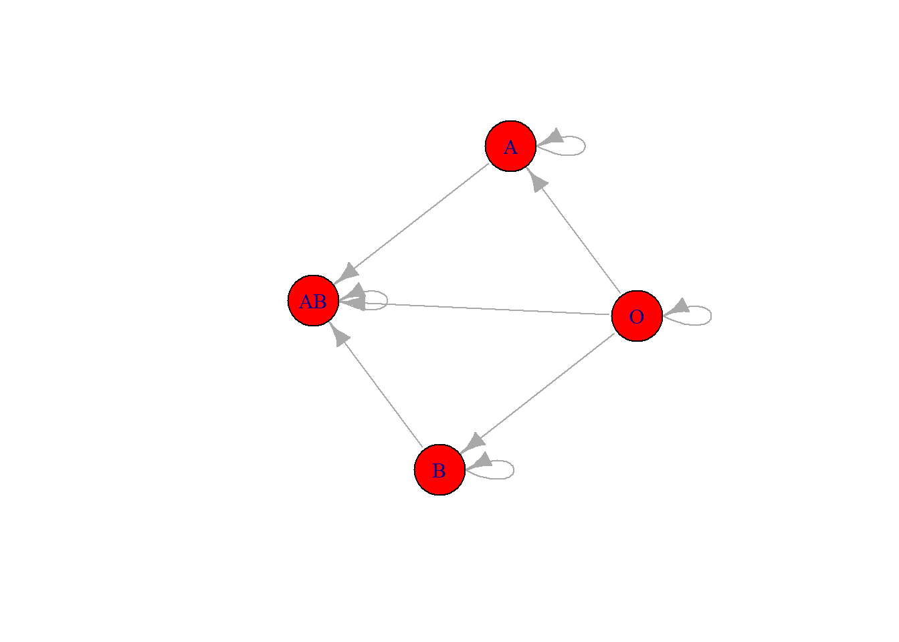
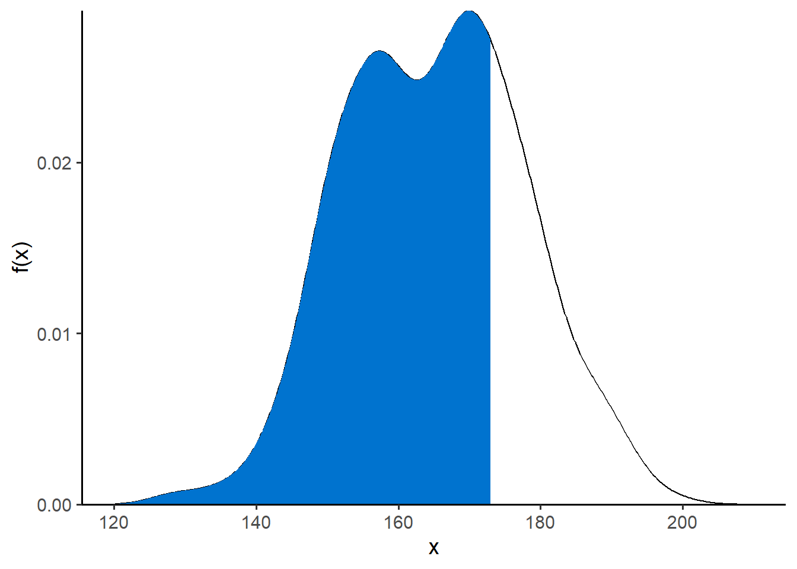
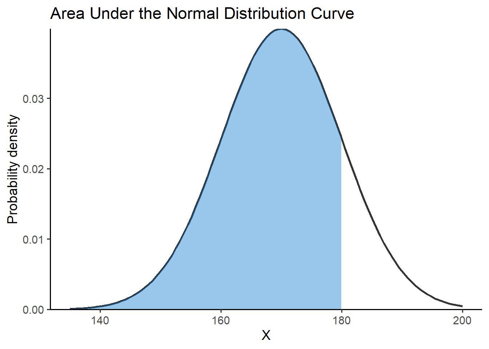
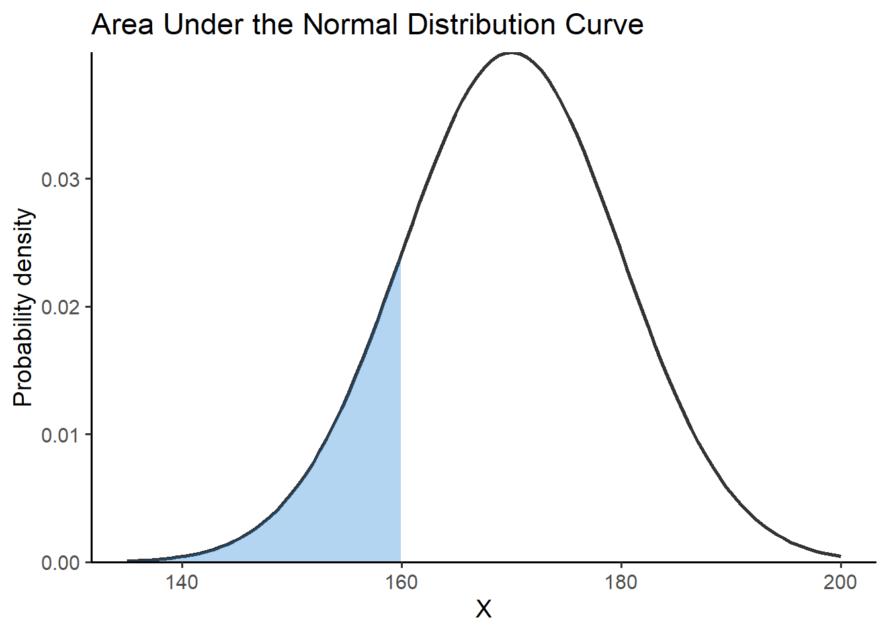
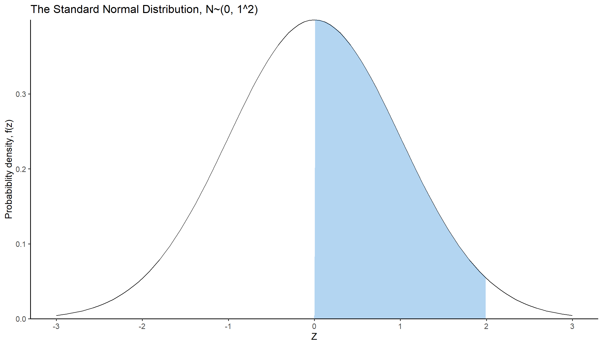

14 Probability Distributions
When we have finished this Chapter, we should be able to:
14.1 Packages we need
We need to load the following packages:
14.2 Random variables and Probability Distributions
A random variable assigns a numerical quantity to every possible outcome of a random phenomenon and may be:
- discrete if it takes either a finite number or an infinite sequence of possible values
- continuous if it takes any value in some interval on the real numbers
For example, a random variable representing the ABO blood system (A, B, AB, or O blood type) would be discrete, while a random variable representing the height of a person in centimeters would be continuous.
Example
Suppose the X random variable for blood type is explicitly defined as follows:
\[X={\begin{cases}1, &for\ blood\ type\ A\\2, &for\ blood\ type\ B\\3, &for\ blood\ type\ AB\\4, &for\ blood\ type\ O\end{cases}}\]
That is, X is the discrete random variable that has four possible outcomes; it takes the value 1 if the person has blood type A, 2 if the person has blood type B, 3 if the person has blood type AB, and 4 if the person has blood type O.
We can also find the probability distribution that describes the probability of different possible values of random variable X. Note that the probability axioms and properties that we discussed earlier are also applied to random variables (e.g., the total probability for all possible values of a random variable equals to one).
Probability distributions are often presented using probability tables or graphs. For example, assume that the individual probabilities for different blood types in a population are P(A) = 0.41, P(B) = 0.10, P(AB) = 0.04, and P(O) = 0.45 (Note that: P(A) + P(B) + P(AB) + P(O) = 0.41 + 0.10 + 0.04 + 0.45 = 1).
\[P(X=x)={\begin{cases}0.41,&for\ x=1\\0.10,&for\ x=2\\0.04,&for\ x=3\\0.45,&for\ x=4\end{cases}}\]
| Blood type | A | B | AB | O |
| X | 1 | 2 | 3 | 4 |
| P(X) | 0.41 | 0.10 | 0.04 | 0.45 |
Here, x denotes a specific value (i.e. 1, 2, 3, or 4) of the random variable X. Then, instead of saying P(A) = 0.41, i.e., the blood type is A with probability 0.41, we can say that P(X = 1) = 0.41, i.e., X is equal to 1 with probability of 0.41.
We can use the probability distribution to answer probability questions:
What is the probability that a randomly selected person from the population can donate blood to someone with type B blood?
We know that individuals with blood type B or O can donate to a person with blood type B (Figure 14.1).
Show the code
# data in a form of a matrix
x <- c(1, 0, 0, 0, 1, 1, 0, 0, 1, 0, 1, 0, 1, 1, 1, 1)
nodes_names <- c("O", "A", "B", "AB")
adjm <- matrix(x, 4, dimnames = list(nodes_names, nodes_names))
set.seed(124)
# build the graph object
network <- graph_from_adjacency_matrix(adjm)
# plot it
plot(network, vertex.size= 32, vertex.color = "red")
Therefore, we need to find the probability P(blood type B OR blood type O). Since the events blood type B or blood type O are mutually exclusive, we can use the addition rule for mutually exclusive events to get:
\[ \textrm{P(blood type B OR blood type O)= P(X = 2) + P(X = 4) = 0.10 + 0.45 = 0.55}\]
Hence, there is a 55% chance that a randomly selected person in our population can donate blood to someone with type B blood.
There are several types of probability distributions, and they can be broadly categorized into two main groups: discrete probability distributions and continuous probability distributions.
14.3 Discrete Probability Distributions
The probability distribution of a discrete random variable X is defined by the probability mass function (pmf) as:
\[ P(X = x) = P(x) \tag{14.1}\]
where:
\(P(X = x)\) is the probability that the random variable X takes the value x
\(P(x)\) is the probability of the specific outcome x occurring.
Additionally, the cumulative distribution function (cdf) gives the probability that the random variable X is less than or equal to x and is usually denoted as F(x):
\[F(x) = P(X \le x)= \sum_{x_i\le x} P(x_i) \tag{14.2}\]
where the sum takes place for all the values \(x_1, x_2, \ldots, x_i\), which are \(x_i\le x\).
When dealing with a random variable, it is common to calculate three important summary statistics: the expected value, variance and standard deviation.
Expected Value
The expected value, denoted as μ or E(X), is defined as the weighted average of the values that X can take on, with each possible value being weighted by its respective probability, P(x).
\(\mu = E(X)= \sum\limits_i x_i \cdot P(x_i)\)
Variance
We can also define the variance, denoted as \(\sigma^2\), which is a measure of the variability of the X.
\(\sigma^2=\text{Var}(X)= E[X - E(X)]^2 = E[(X - \mu)^2] = \sum\limits_i\ (x_i-\mu)^2 P(x_i)\)
There is an easier form of this formula.
\(\sigma^2=\text{Var}(X)= E(X^2) - E(X)^2=\sum\limits_i x_i^2 P(x_i)-\mu^2\)
Standard deviation
The standard deviation is the square root of the variance. It is often preferred over the variance because it is in the same units as the random variable.
\(\sigma=\sqrt{\text{Var(X)}}=\sqrt{\sigma^2}\)
Bernoulli distribution
A random experiment with two possible outcomes, generally referred to as success (x = 1) and failure (x = 0), is called a Bernoulli trial.
Let X be a binary random variable of a Bernoulli trial which takes the value 1 (success) with probability p and 0 (failure) with probability 1-p. The distribution of the X variable is called Bernoulli distribution with parameter p, denoted as \(X ∼ Bernoulli(p)\), where \({0\leq p\leq 1}\).
- The probability mass function (pmf) of X is given by:
\[P(X=x)={\begin{cases}1-p,&for\ x=0\\p,&for\ x=1\end{cases}} \tag{14.3}\]
which can also be written as: \[P(X=x)=p^{x}(1-p)^{1-x}\quad {\text{for }}x\in \{0,1\} \tag{14.4}\]
- The cumulative distribution function (cdf) of X is given by:
\[F(x) = P(X \le x)= {\begin{cases}0,&for\ x <0\\1-p,&for\ 0\leq x < 1\\1,&for\ x \geq 1 \end{cases}} \tag{14.5}\]
The random variable X can take either value 0 or value 1. If \(x<0\), then \(P(X \le x) = 0\) because X can not take values smaller than 0. If \(0\leq x < 1\), then \(P(X \le x) = P(X=0) = 1-p\). Finally, if \(x \geq 1\), then \(P(X \le x) = P(X = 0) + P(X = 1) = (1 - p) + p = 1\).
The expected value of random variable, X, with Bernoulli(p) distribution is:
\[E(X) = μ = p \tag{14.6}\]
The variance is:
\[Var(X) = \sigma^2= p(1-p) \tag{14.7}\]
and the standard deviation is:
\[ \sqrt{Var(X)} = σ = \sqrt{p(1-p)} \tag{14.8}\]
Example
Let X be a random variable of the result of a surgical procedure, where X = 1 if the surgery was successful and X = 0 if it was unsuccessful. Suppose that the probability of success is p = 0.7. Then X has a Bernoulli distribution with parameter p = 0.7 :
\[X ∼ Bernoulli(0.7)\]
- The pmf for this distribution is:
\[P(X=x)={\begin{cases}0.3,&for\ x=0\\0.7,&for\ x=1\end{cases}} \tag{14.9}\]
According to Equation 14.9 we have:
| X | 0 | 1 |
| P(X) | 0.3 | 0.7 |
We can plot the pmf for visualizing the distribution of the two outcomes (Figure 14.2).
# Create a data frame
x <- as.factor(c(0, 1))
y <- c(0.3, 0.7)
dat1 <- data.frame(x, y)
# Plot
ggplot(dat1, aes(x = x, y = y)) +
geom_segment(aes(x = x, xend=x, y=0, yend = y), color = "black") +
geom_point(color="deeppink", size = 4) +
theme_classic(base_size = 14) +
labs(title = "pmf Bernoulli(0.7)",
x = "X", y = "Probability") +
theme(axis.text = element_text(size = 14))
- The cdf for this distribution is:
\[F(x) = P(X \le x)={\begin{cases}0,&for\ x <0\\0.3,&for\ 0\leq x < 1\\1,&for\ x \geq 1 \end{cases}}\]
# Create a data frame
dat2 <- data.frame(x = -1:2,
y = pbinom(-1:2, size = 1, prob = 0.7))
# Step line plot
ggplot(dat2, aes(x=x, y=y)) +
geom_step() +
scale_y_continuous(limits = c(0, 1), breaks = seq(0, 1, 0.1)) +
theme_classic(base_size = 14) +
labs(title = "cdf Bernoulli(0.7)",
x = "X", y = "F(x)") +
theme(axis.text = element_text(size = 14))
Binomial distribution
The binomial probability distribution can be used for modeling the number of times a particular event occurs (successes) in a sequence of n repeated and independent Bernoulli trials.
- There is a fixed number of n repeated Bernoulli trials.
- The n trials are all independent. That is, knowing the result of one trial does not change the probability we assign to other trials.
- Both probability of success, p, and probability of failure, 1-p, are constant throughtout the trials.
Let X be a random variable that indicates the number of successes in n-independent Bernoulli trials. If random variable X satisfies the binomial setting, it follows the binomial distribution with parameters n and p, denoted as \(X ∼ Binomial(n, p)\), where n is the Bernoulli trial parameter (a positive integer) and p the Bernoulli probability parameter (\({0\leq p\leq 1}\)).
- The probability mass function (pmf) of X is given by:
\[ P(X=x) = {{n}\choose{x}} \cdot p^x \cdot (1-p)^{n-x} \tag{14.10}\]
where x = 0, 1, … , n, \(\binom{n}{x} = \frac{n!}{x!(n-x)!}\), and \({0\leq p\leq 1}\).
Note that: \(n! = 1\cdot 2 \cdot 3\cdot \ldots \cdot (n-2)\cdot (n-1)\cdot n\)
- The cumulative distribution function (cdf) of X is given by:
\[F(x) = P(X \le x)= {\begin{cases}0,&for\ x <0\\\sum_{k=0}^{x}{\left( \begin{array}{c} n \\ k \end{array} \right) p^{k}(1 - p)^{n-k}},&for\ 0\leq x < n\\1,&for\ x \geq n \end{cases}} \tag{14.11}\]
- The mean of random variable, X, with Binomial(n, p) distribution is:
\[μ = np \tag{14.12}\]
the variance is:
\[σ^2 = np(1-p) \tag{14.13}\]
and the standard deviation:
\[σ = \sqrt{np(1-p)} \tag{14.14}\]
Example
Let the random variable X be the number of successful surgical procedures and suppose that a new surgery is successful 70% of the time (p = 0.7). If the results of 10 surgeries are randomly sampled, the X has a Binomial distribution \(X ∼ Binomial(10, 0.7)\).
- So, the pmf for this distribution is:
\[ P(X=x) = {{10}\choose{x}} \cdot 0.7^x \cdot (1-0.7)^{10-x} \tag{14.15}\]
The pmf of Binomial(10, 0.7) distribution specifies the probability of 0 through 10 successful surgical procedures.
According to Equation 14.15 we have:
| X | 0 | 1 | 2 | 3 | … | 8 | 9 | 10 |
| P(X) | 0 | 0.0001 | 0.0014 | 0.009 | … | 0.233 | 0.121 | 0.028 |
We can easily compute the above probabilities using the dbinom() function in R:
dbinom(0:10, size = 10, prob = 0.7) [1] 0.0000059049 0.0001377810 0.0014467005 0.0090016920 0.0367569090
[6] 0.1029193452 0.2001209490 0.2668279320 0.2334744405 0.1210608210
[11] 0.0282475249We can plot the pmf for visualizing the distribution (Figure 14.4).
# Create a data frame
dat3 <- data.frame(x = 0:10,
y = dbinom(0:10, size = 10, prob = 0.7))
# Plot
ggplot(dat3, aes(x = x, y = y)) +
geom_segment(aes(x = x, xend=x, y=0, yend = y), color = "black") +
geom_point(color="deeppink", size = 4) +
theme_classic(base_size = 14) +
scale_x_continuous(limits = c(0, 10), breaks = seq(0, 10, 1)) +
labs(title = "pmf Binomial(10, 0.7)",
x = "X", y = "Probability") +
theme(axis.text = element_text(size = 14))- The cdf for this distribution is:
\[F(x) = P(X \le x)={\begin{cases}0,&for\ x <0\\\sum_{k=0}^{x}{\left( \begin{array}{c} 10 \\ k \end{array} \right) 0.7^{k}(1 - 0.7)^{10-k}},&for\ 0\leq x < 10\\1,&for\ x \geq 10 \end{cases}} \tag{14.16}\]
In R, we can calculate the cumulative probabilities for all the possible outcomes using the pbinom() as follows:
# find the cumulative probabilities
pbinom(0:10, size = 10, prob = 0.7) [1] 0.0000059049 0.0001436859 0.0015903864 0.0105920784 0.0473489874
[6] 0.1502683326 0.3503892816 0.6172172136 0.8506916541 0.9717524751
[11] 1.0000000000The cdf for this distribution is shown below (Figure 14.5):
# Create a data frame
dat4 <- data.frame(x = 0:10,
y = pbinom(0:10, size = 10, prob = 0.7))
# Step line plot
ggplot(dat4, aes(x=x, y=y)) +
geom_step() +
theme_classic(base_size = 14) +
scale_x_continuous(limits = c(0, 10), breaks = seq(0, 10, 1)) +
scale_y_continuous(limits = c(0, 1), breaks = seq(0, 1, 0.1)) +
labs(title = "cdf Binomial(10, 0.7)",
x = "X", y = "F(x)") +
theme(axis.text = element_text(size = 14))What is the probability that more than 8 of 10 surgical procedures are successful?
We want to calculate the P(X > 8):
\[ P(X > 8)= P(X = 9) + P(X = 10) = {{10}\choose{9}} \cdot 0.7^9 \cdot 0.3^1 + {{10}\choose{10}} \cdot 0.7^{10} \cdot 0.3^0 \Rightarrow \]
\[ P(X > 8)= 10 \cdot 0.04035 \cdot 0.3 + 1 \cdot 0.02824 = 0.12105 + 0.02825 = 0.1493\]
In R, we can calculate the probabilities P(X = 9) and P(X = 10) by applying the function dbinom() and adding the results:
p9 <- dbinom(9, size=10, prob=0.7)
p9[1] 0.1210608p10 <- dbinom(10, size=10, prob=0.7)
p10[1] 0.02824752p9 + p10[1] 0.1493083
Of note, another way to find the above probability is to calculate the 1-P(X ≤ 8):
1 - pbinom(8, size=10, prob=0.7)[1] 0.1493083Poisson distribution
While a random variable with a Binomial distribution describes a count variable (e.g., number of successful surgeries), its range is restricted to whole numbers from 0 to n. For example, in a set of 10 surgical procedures (n = 10), the number of successful surgeries cannot surpass 10.
Now, let’s suppose that we are are interested in the number of successful surgeries per month in a particular specialty within a hospital. Theoretically, in this case, it is possible for the values to extend indefinitely without a predetermined upper limit.
Therefore, using the Poisson distribution, we can estimate the probability of observing a certain number of successful surgeries in a given month.
- The events (occurrences) are counted within a fixed interval of time or space. The interval should be well-defined and consistent.
- Each event is assumed to be independent of the others. The occurrence of one event does not affect the probability of another event happening.
- The probability of an event occurring remains consistent throughout the interval.
Let X be a random variable that indicates the number of events (occurrences) that happen within a fixed interval of time or space. If \(λ\) represents the average rate of events (occurrences) in this interval or space, the X has a Poisson distribution that is specified by the parameter \(λ\), denoted as \(X ∼ Poisson(λ)\), where \(λ\) is a positive real number (\(λ >0\)).
- The probability mass function (pmf) of X is given by:
\[ P(X=x)={\frac {\lambda ^{x}e^{-\lambda }}{x!}} \tag{14.17}\]
where x = 0, 1, … +∞, λ > 0.
The mean and variance of a random variable with Poisson(λ) distribution are the same and equal to λ. That is, μ = λ and \(σ^2 = λ\).
Example
For instance, let’s say we’re analyzing the number of successful heart transplant surgeries per week in a specialized cardiac center. We assume that the average rate of successful surgeries per week is 2.5 (\(λ = 2.5\)).
\[X ∼ Poisson(2.5)\]
Therefore, the population mean and variance of this variable is 2.5.
According to Equation 14.17 the resulting probability table is:
| X | 0 | 1 | 2 | 3 | 4 | 5 | 6 | 7 | 8 | … |
| P(X) | 0.082 | 0.205 | 0.257 | 0.214 | 0.134 | 0.067 | 0.028 | 0.01 | 0.003 | … |
We can compute the above probabilities using the dpois() function in R:
dpois(0:8, lambda = 2.5)[1] 0.082084999 0.205212497 0.256515621 0.213763017 0.133601886 0.066800943
[7] 0.027833726 0.009940617 0.003106443We can also plot the pmf for visualizing the distribution (Figure 14.6).
# Create a data frame
dat5 <- data.frame(x = 0:8,
y = dpois(0:8, lambda = 2.5))
# Plot
ggplot(dat5, aes(x = x, y = y)) +
geom_segment(aes(x = x, xend=x, y=0, yend = y), color = "black") +
geom_point(color="deeppink", size = 4) +
theme_classic(base_size = 14) +
scale_x_continuous(limits = c(0, 8), breaks = seq(0, 8, 1)) +
labs(title = "pmf Poisson(2.5)",
x = "X", y = "Probability") +
theme(axis.text = element_text(size = 14))For this example, the probability of none successful heart transplant surgery in a week is P(X = 0) = 0.08, while the probability of exactly two successful surgeries per week increases to P(X = 2) = 0.257.
In R, we can calculate the cumulative probabilities for all the possible outcomes using the ppois() as follows:
# find the cumulative probabilities
ppois(0:8, lambda = 2.5)[1] 0.0820850 0.2872975 0.5438131 0.7575761 0.8911780 0.9579790 0.9858127
[8] 0.9957533 0.9988597The cdf for this distribution is shown below (Figure 14.7):
# Create a data frame
dat6 <- data.frame(x = 0:8,
y = ppois(0:8, lambda = 2.5))
# Step line plot
ggplot(dat6, aes(x=x, y=y)) +
geom_step() +
theme_classic(base_size = 14) +
scale_x_continuous(limits = c(0, 8), breaks = seq(0, 8, 1)) +
scale_y_continuous(limits = c(0, 1), breaks = seq(0, 1, 0.1)) +
labs(title = "cdf Poisson(2.5)",
x = "X", y = "F(x)") +
theme(axis.text = element_text(size = 14))What is the probability of up to four successful heart transplant surgeries per week?
We want to calculate the probability P(X ≤ 4). In this instance, we add the individual probabilities for the corresponding outcomes: P(X ≤ 4) = P(X = 0) + P(X = 1) + P(X = 2) + P(X = 3) + P(X = 4) = 0.082 + 0.205 + 0.257 + 0.214 + 0.134 = 0.892.
In R, we can calculate this probability by applying the function ppois():
ppois(4, lambda = 2.5)[1] 0.891178So, the probability of up to four successful heart transplant surgeries per week in the specialized cardiac center is approximately 0.89 or 89%.
14.4 Probability distributions for Continuous Outcomes
Unlike discrete random variables, which have a probability mass function (pmf) that assigns probabilities to individual values, continuous random variables have a probability density function (pdf). In this case, we are interested in the probability that the value of the random variable X is within a specific interval from \(x_1\) to \(x_2\), denoted as \(P(x_1 ≤ X ≤ x_2)\) (Figure 14.8).
\[ P(x_1\leq X \leq x_2)=\int_{x_1}^{x_2}f(x)dx \tag{14.18}\]
where f(x) is the probability density functions (pdf) of X .
Show the code
# Create a data frame
set.seed(1234)
df <- data.frame(w = round(c(rnorm(200, mean=175, sd=8),
rnorm(200, mean=155, sd=8)))
)
df1 <- with(density(df$w), data.frame(x, y))
ggplot(df1, mapping = aes(x = x, y = y)) +
geom_line()+
geom_area(mapping = aes(x = ifelse(x > 170 & x < 173 , x, 0)), fill = "#0073CF") +
xlim(120, 210) +
labs(y = "f(x)") +
theme_minimal(base_size = 16)Additionally, from the pdf we can find the cumulative probability by calculating the likelihood from -∞ to a specific value \(x_o\) (shaded blue area in Figure 14.9):
Show the code

The cumulative distribution function (cdf) gives the probability that the random variable X is less than or equal to \(x_o\) and is usually denoted as:
\[ F(x_o) = P(X\leq x_o)=\int_{- \infty }^{x_o}f(x)dx \tag{14.19}\] where \(-\infty \leq x_o \leq + \infty\)
The probability of a certain point value in X is zero, and the area under the probability density curve of the interval (−∞, +∞) should be 1.
Normal distribution
A normal distribution, also known as a Gaussian distribution, is a fundamental concept in statistics and probability theory and is defined by two parameters: the mean (μ) and the standard deviation (σ) (see Chapter 15).
- The probability density function (pdf) of \(X ∼ Normal(μ, σ^2)\) is given by:
\[ f(x)={\frac {1}{\sigma {\sqrt {2\pi }}}}e^{-{\frac {1}{2}}\left({\frac {x-\mu }{\sigma }}\right)^{2}} \tag{14.20}\]
where \(\pi \approx 3.14\) and \(e \approx 2.718\).
- The cumulative distribution function (cdf) of X sums from negative infinity up to the value of \(x_o\), which is \((-∞, x_o]\) in interval notation:
\[ F(x_o) = P(X\leq x_o)={\frac {1}{\sigma {\sqrt {2\pi }}}} \int_{- \infty }^{x_o}e^{-{\frac {1}{2}}\left({\frac {x-\mu }{\sigma }}\right)^{2}}dx \tag{14.21}\] where \(-\infty \leq x_o \leq + \infty\)
Example
Let’s say that in a population the random variable of height, X, for adult people approximates a normal distribution with a mean μ = 170 cm and a standard deviation σ = 10 cm. The pdf for this distribution is shown below (Figure 14.10):
ggplot() +
geom_function(fun = dnorm, args = list(mean = 170, sd = 10),
color= "gray20", linewidth = 1) +
xlim(140, 200) +
labs(x = "X", y = "Probabiblity Density, f(x)",
title = "The Normal Distribution, N~(170, 10^2)") +
theme_minimal(base_size = 16)
The Figure 14.11 illustrates the normal cumulative distribution function. Note that continuous variables generate a smooth curve, while discrete variables produce a stepped line plot.
# Create a data frame
dat7 <- data.frame(x = seq(140, 200, by = 0.1),
y = pnorm(seq(140, 200, by = 0.1), mean=170, sd=10))
# Plot
ggplot(dat7, aes(x=x, y=y)) +
geom_step() +
labs(x = "X", y = "Cumulative Probabiblity, F(x)") +
theme_minimal(base_size = 16)
Let’s assume that we want to calculate the area under the curve between 160 cm and 180 cm, that is:
\[ P(160\leq X \leq 180)=\int_{160}^{180}f(x)dx \]
Show the code
# Create a data frame
df2 <- data.frame(x = seq(140, 200, by = 0.1),
y = dnorm(seq(140, 200, by = 0.1), mean=170, sd=10))
# Create the plot
ggplot(df2, aes(x = x, y = y)) +
geom_function(fun = dnorm, args = list(mean = 170, sd = 10),
color= "gray20", linewidth = 1) +
geom_area(mapping = aes(x = ifelse(x > 160 & x < 180, x, 0)), fill = "#0073CF", alpha = 0.4) + # Area under the curve
xlim(140, 200) +
labs(x ="x", y = "Density",
title = "Area Under the Normal Distribution Curve") +
theme_minimal(base_size = 16)Using the properties of integrals we have:
\[ \int_{-\infty}^{180}f(x)dx = \int_{-\infty}^{160}f(x)dx + \int_{160}^{180}f(x)dx \] \[ \Leftrightarrow \int_{160}^{180}f(x)dx = \int_{-\infty}^{180}f(x)dx - \int_{-\infty}^{160}f(x)dx \] \[ \Leftrightarrow P(160\leq X \leq 180) = P(X \leq 180)- P(X \leq 160) \]
Therefore, one way to find the area under the curve between 160 cm and 180 cm is to calculate the cdf at each of these values and then find the difference between them:
- Lets calculate the \(P(X \leq 180)\):
\[ P(X \leq 180)=\int_{-\infty}^{180}f(x)dx \]
Show the code
# Create the plot
ggplot(df2, aes(x = x, y = y)) +
geom_function(fun = dnorm, args = list(mean = 170, sd = 10),
color= "gray20", linewidth = 1) +
geom_area(mapping = aes(x = ifelse(x > 140 & x < 180, x, 0)), fill = "#0073CF", alpha = 0.4) + # Area under the curve
xlim(140, 200) +
labs(x = "X", y = "Density",
title = "Area Under the Normal Distribution Curve") +
theme_minimal(base_size = 16)
pnorm(180, mean = 170, sd = 10)[1] 0.8413447
- Similarly, we can calculate the \(P(X \leq 160)\):
\[ P(X \leq 160)=\int_{-\infty}^{160}f(x)dx \]
Show the code
# Create the plot
ggplot(df2, aes(x = x, y = y)) +
geom_function(fun = dnorm, args = list(mean = 170, sd = 10),
color= "gray20", linewidth = 1) +
geom_area(mapping = aes(x = ifelse(x > 140 & x < 160, x, 0)), fill = "#0073CF", alpha = 0.3) + # Area under the curve
xlim(140, 200) +
labs(x = "X", y = "Density",
title = "Area Under the Normal Distribution Curve") +
theme_minimal(base_size = 16)
pnorm(160, mean = 170, sd = 10)[1] 0.1586553
Finally, we subtract the two values (shaded blue areas) as follows:
Standard Normal distribution
If X is a random variable with a normal distribution having a mean of \(\mu\) and a standard deviation of \(\sigma\), then the standardized Normal deviate can be expressed as:
\[ z= \frac{x-\mu}{\sigma} \tag{14.22}\]
The z (often called z-score) is a random variable that has a Standard Normal distribution, also called a z-distribution, i.e. a special normal distribution where \(\mu=0\) and \(\sigma^2=1\). In this case, Equation 14.20 is transformed as follows:
\[ f(z)={\frac {1}{{\sqrt {2\pi }}}}e^{-{\frac {1}{2}}z^2} \tag{14.23}\]
ggplot() +
stat_function(fun = dnorm, args = list(mean = 0, sd = 1)) +
scale_x_continuous(limits = c(-3, 3), breaks = seq(-3, 3, 1)) +
labs(x = "Z", y = "Probabiblity Density, f(z)",
title = "The Standard Normal Distribution, N~(0, 1^2)") +
theme_minimal(base_size = 16)Example
Z-scores are commonly used in medical settings to assess how an individual’s measurement compares to the average value of the entire population. For example, let’s assume that the diastolic blood pressure distribution among men has a normal distribution with mean 80 mmHg and standard deviation 15 mmHg. If an individual’s diastolic blood pressure is recorded as 110 mmHg, the z-score (Equation 14.22) can be calculated to quantify the number of standard deviations by which his blood pressure differs from the population mean:
\(z = \frac{(110 – 80)}{15} = 2\)
So this man has a diastolic blood pressure that is 2 standard deviations above the population mean.
To find the area under the curve between two z-scores, \(z_1\) and \(z_2\), we have to integrate the pdf Equation 14.23 as follows:
\[ P(z_1\leq Z\leq z_2)={\frac {1}{{\sqrt {2\pi }}}}\int_{z_1}^{z_2}e^{-{\frac {1}{2}}z^2}dz \tag{14.24}\]
For example, let’s calculate the area under the curve in Figure 14.16:
Show the code
# Create a data frame
df3 <- data.frame(x = seq(-3, 3, by = 0.01),
y = dnorm(seq(-3, 3, by = 0.01), mean=0, sd=1))
ggplot(df3, aes(x = x, y = y)) +
stat_function(fun = dnorm, args = list(mean = 0, sd = 1)) +
geom_area(mapping = aes(x = ifelse(x > 0 & x < 2, x, 0)), fill = "#0073CF", alpha = 0.3) + # Area under the curve
scale_x_continuous(limits = c(-3, 3), breaks = seq(-3, 3, 1)) +
labs(x = "Z", y = "Probabiblity Density, f(z)",
title = "The Standard Normal Distribution, N~(0, 1^2)") +
theme_minimal(base_size = 16)
In R, we can easily calculate the above area using the cdf of the normal distribution:
\[P(0\leq Z\leq 2) = P(Z\leq 2) - P(Z\leq 0)\]
t-distribution
The t-distribution, also known as the Student’s t-distribution, is very similar to standard normal distribution and is used in statistics when the sample size is small or when the population standard deviation is unknown.
The t-distribution is specified by a parameter called the degrees of freedom (df). The degrees of freedom are related to the sample size (df > 0) and determine the shape of the t-distribution. As the degrees of freedom increase (df > 30), the t-distribution approaches the normal distribution more closely.
The distribution’s mean is μ = 0, and the variance is determined by the degrees of freedom, \(σ^2 = df/(df −2)\).
Given that the shape of the t-distribution changes with different sample sizes (signified by degrees of freedom), it’s essential to indicate the df value. In Figure 14.17 we define our curve by setting df = 3:
ggplot() +
stat_function(fun = dnorm, args = list(mean = 0, sd = 1)) +
stat_function(fun = dt, args = list(df = 3), color = "blue") +
scale_x_continuous(limits = c(-5, 5), breaks = seq(-5, 5, 1)) +
annotate("text", x = 0, y = 0.41, label = "standard normal") +
annotate("text", x = 0, y = 0.38, label = "t(3)", color = "blue") +
labs(x = "t", y = "Probabiblity Density") +
theme_minimal(base_size = 16)Just like the standard normal distribution, the probability density curve of a t-distribution is bell-shaped and symmetric around its mean (μ = 0). However, the probability density curve of the t-distribution decreases more slowly than that of the standard normal distribution (t-distribution has “heavier” tails than the standard normal distribution).
If the area of the curve is known, it is possible to calculate the corresponding t-value. For example, in Figure 14.18, if each of the shaded light blue areas equal to 0.025, we can find the t-value using the qt() function in R:
Show the code
# Create a data frame
df4 <- data.frame(x = seq(-5, 5, by = 0.01),
y = dt(seq(-5, 5, by = 0.01), df = 3))
ggplot() +
stat_function(fun = dnorm, args = list(mean = 0, sd = 1)) +
stat_function(fun = dt, args = list(df = 3), color = "blue") +
geom_area(data = df4, mapping = aes(x = ifelse(x < -3, x, -3.182), y = y), fill = "#0073CF", alpha = 0.3) + # Area under the curve
geom_area(data = df4, mapping = aes(x = ifelse(x > 3, x, 3.182), y = y), fill = "#0073CF", alpha = 0.3) + # Area under the curve
scale_x_continuous(limits = c(-5, 5), breaks = seq(-5, 5, 1)) +
annotate("text", x = 0, y = 0.41, label = "standard normal") +
annotate("text", x = 0, y = 0.38, label = "t(3)", color = "blue") +
labs(x = "t", y = "Probabiblity Density") +
theme_minimal(base_size = 16)qt(0.025, df = 3)[1] -3.182446qt(0.975, df = 3)[1] 3.182446